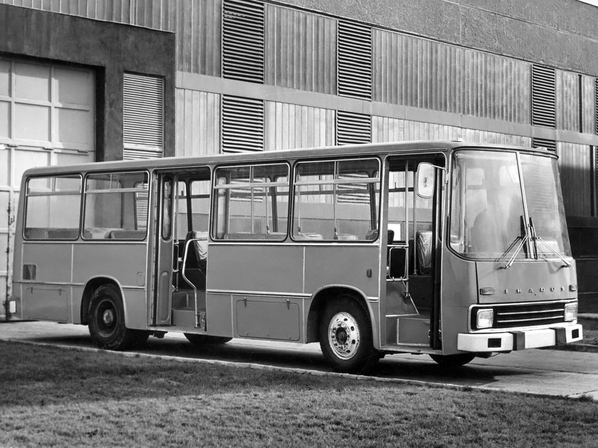

Ikarus
Az Ikarus egyike a magyar ipar egy időben legsikeresebb, valóban világhírű márkaneveinek. Az állami autóbuszgyár
előtörténete 1895-ig nyúlik vissza, viszont története Ikarus néven csak a második világháború után kezdődött meg.
Az Ikarus mint állami vállalat az 1970-es és az 1980-as években a világ legnagyobb járműgyártói közé tartozott és
meghatározó szerepet töltött be nem csupán a keleti blokk államainak piacán, hanem a világpiac egyéb országai,
többek között a nyugati államok körében is.
Az állami vállalat privatizálása után Ikarus autóbuszok csak csekély számban készültek Magyarországon. Az Ikarus
névre 2017-2018-ban több védjegybejelentési kérelem is beadásra került, ami jogvitákat eredményezett.

200-as buszcsalád
435-ös típus
Forrás:
Forrás 1
Forrás 2
Forrás 3
- Ikarus 280
- Ikarus 435
- Ikarus V187
- Ikarus 260
- Ikarus 415
- Ikarus V127
- Modulo 108D
- - Ikarus V127
- Modulo 168D
- - Ikarus V187